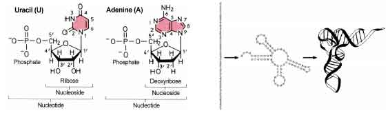
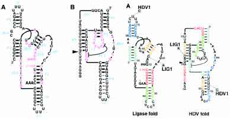

Ribonucleic Acid (RNA) is an important molecule that performs a wide range of functions in biological systems. In particular, it is RNA (not DNA) that contains the genetic information of viruses such as HIV and thereby regulates the functions of these viruses. RNA has recently become the center of much attention because of its catalytic properties, leading to an increased interest in obtaining structural information.
RNA molecules have two sets of structural information: first, the primary structure of RNA is a single strand made of the ribonucleotides A(adenine), C(cytosine), G(guanine), and U(uracil), Secondly, the ribonucleotide sequences fold over onto themselves to form double-stranded regions of base parings, yielding higher order tertiary structures.

It is well known that the structural features of RNAs are important in the molecular mechanisms involving their functions. The presumption, of course, is that to a preserved function there corresponds a preserved molecular confirmation and, therefore, a preserved structure. The RNA secondary structure is a restricted subset of the tertiary structure that plays an important role between primary structure and tertiary structure, as the problem of inferring the tertiary structures of RNA molecules is often intractable. Based on a reliable secondary structure, the possible tertiary interactions that occur between secondary structural elements, as well as between these elements and single-stranded regions of RNAs, can be characterized.
Because an RNA sequence is composed of four possible bases, we can use a four-letter alphabet {A,C,G,U} to represent an RNA sequence. The base sequence is usually referred to as primary structure. An RNA sequence folds by intramolecular base paring and is stabilized by the hydrogen bonds that result from that base pairing. Additionally, the stacking of base pairs in a helix stabilizes the molecule and decreases the free energy of the folded structure, but the appearance of loops destabilizes the molecule and increases the free energy of the RNA structure.
In an RNA secondary structure, base pairs are formed as one of the three kinds of pairs, C-G(G-C), A-U(U-A), and G-U(U-G). The are three hydrogen bonds between C-G(G-C) pairs, two between A-U(U-A) and one between G-U(U-G). Base pairs C-G(G-C) and A-U(U-A) are called Watson-Crick base pairs. The base pair G-U(U-G) is referred to as a wobble base pair. These three types of pairings are referred to as canonical base pairs.
We use (i,j) to represent the base pair formed by the i-th base, ri and the j-th base, rj, where 1 <= i < j <= n. Let S be a set of base pairs for sequence R, then set S is called RNA secondary structure if S satisfies the following conditions:
Since base pairs cannot cross each other, we can use a dot-bracket string to represent secondary structures. The representation contains brackets and dots, one for each base. A dot represents an unpaired base, and two matched brackets represent a base pair.
Given a set of secondary structures, the nucleic acid design problem asks for a primary structure that can fold into all the given structures. As an excellent design example, two ribozyme folds were selected that share no evolutionary history and not even a base pair in the secondary structure: the synthetic class III self-ligating ribozyme and the hepatitis delta virus (HDV) self-cleaving ribozyme. A sequence was then designed that can fold into both predescribed structures and fulfill both respective enzymatic reactions. These results provide new insight into the possible mechanisms of ribozyme evolution, since it suggests that RNAs with novel structures and activities could arise from previously existing catalytic RNAs without an intermediate step of a non-functional sequence.

Write a program to count the number of primary structures that might be folded into all given secondary structures, at least in theory.
The input consists of at most 100 test cases. Each case contains an integers n (1 < n < 6), the number of secondary structures. The following n lines each contain a secondary structure in dot-bracket representation. All the secondary structures have the same length within each case, which is between 10 and 50 (inclusive). It is guaranteed that every base is enclosed by at most 5 base pairs in each secondary structure. The last case is followed by a single zero, which should not be processed. All the test cases are randomly generated with various parameters.
For each test case, print the case number and the number of primary structures. It is guaranteed that the answer does not exceed 1018.
2 ..(...).. (...).... 3 (...)...... (........). ....(....). 3 .(..(...)).... ..(((....).).) (...).(.....). 0
Case 1: 36864 Case 2: 0 Case 3: 387072
In the first sample, there are 2 pairs and 5 unconstrained bases. Since there are only 6 canonical pairs, there are totally 62*45=36864 possible primary structures.